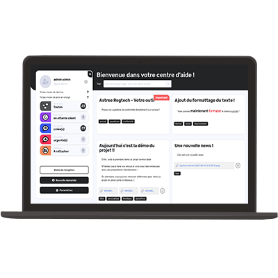
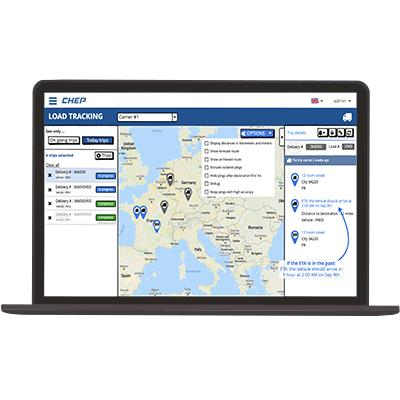
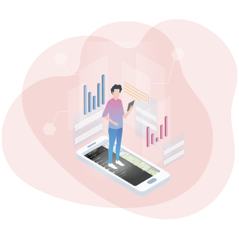
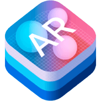
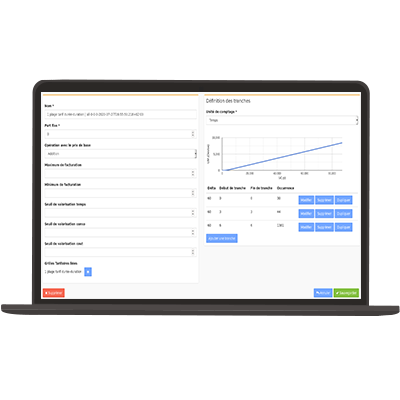
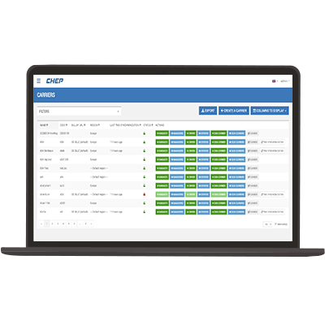

Découvre nos offres de stage
Les stages sont un excellent tremplin entre la vie étudiante et la vie professionnelle, c'est pour
cela que nous proposons des stages diversifiés qui permettent de t'intégrer
pleinement au sein d'une équipe projet. Malgré la situation sanitaire actuelle nous
continuons d’intégrer des étudiant.es sur le long terme, n’hésite pas à regarder les témoignages
pour t’en convaincre. Si tu recherches un stage enrichissant
techniquement et humainement, alors n'attends plus, consulte les
offres ci-dessous et prends contact avec nous !

-
Service DeskDev
La mission
Le projet "Service Desk" (ou "Gestion des demandes") a pour vocation d'offrir à des utilisateurs d'applications 4SH un outil support.
Le projet "Service Desk" (ou "Gestion des demandes") a pour vocation d'offrir à des utilisateurs d'applications 4SH un outil support sur lequel des agents sont là pour répondre à des demandes exprimées par des utilisateurs (problèmes rencontrés, questions sur le fonctionnement, ...)
Cette application a été démarrée été 2020 et est donc basée sur les nouvelles techno "standards" chez 4SH. C'est une application qui a été développée durant plusieurs "sprints" avec une équipe projet complète : pilote, expert technique, développeurs, designers, fonctionnels...
Le projet "Service Desk" offre ainsi l'occasion de rentrer de plein pied dans le quotidien d'un développeur chez 4SH et le stagiaire sera amené à faire évoluer l'application pour l'enrichir de différentes fonctionnalités :- Génération de rapports et de graphiques personnalisés
- Prise en compte de la SLA (délais de réponse d'un agent sur une demande)
- ... WIP (besoins peut être à récolter du côté de CIN et BECLM afin d'identifier de nouvelles évolutions à implémenter)
Les technos
-
CHEP USADev
La mission
L'idée est de travailler sur différentes propositions de refontes et enrichissement d'un écran de tracking de transport de marchandises, en lien avec le sujet UX.
L'idée est de travailler sur différentes propositions de refontes et enrichissement d'un écran de tracking de transport de marchandises, en lien avec le sujet UX.
Les plus
Travail en binôme avec un stagiaire UX, utilisation des APIs Google / PCMiler, Technos
Les technos
-
Reflexion et audit d'accessibilitéUX Dev
La mission
4SH souhaite améliorer l’accessibilité de ses logiciels afin de s’ouvrir à une plus grande diversité d’utilisateurs et d’usages.
4SH souhaite améliorer l’accessibilité de ses logiciels afin de s’ouvrir à une plus grande diversité d’utilisateurs et d’usages : situations de handicap, navigation au clavier, usage en mobilité… Le stage de 6 mois qui vous est proposé a deux objectifs :
Réaliser un audit du niveau d’accessibilité numérique d’un logiciel existant, apporter un regard extérieur sur les pratiques des métiers à 4SH afin d’identifier de possibles améliorations dans les habitudes de design et de développement.Audit d’accessibilité
Après avoir étudié le public utilisant le logiciel et décrit les besoins en terme d’accessibilité, vous réaliserez une étude complète du niveau d’accessibilité du logiciel accompagnée de préconisations pour l’améliorer. Vous vous appuierez sur les guidelines du W3C et/ou du RGAA, ainsi que des critères d’exigence propres à l’entreprise cliente.
Le choix du logiciel à étudier est en cours, en partenariat avec les clients. Il sera probablement celui de l’une des entreprises suivantes : Izivia (filiale d’EDF), Filhet Allard (3ème courtier en assurance national, né à Bordeaux) ou CHEP (le célèbre fournisseur mondial des palettes bleues).Regard extérieur sur les pratiques
L’accessibilité est l’affaire des tous les métiers : consultants fonctionnels, designers d’interfaces et développeurs.
Comment faciliter la mise en place de bonnes pratiques d’accessibilité ?
En interrogeant les habitudes de design et de développement chez 4SH, vous tenterez d’identifier et de communiquer des bonnes pratiques généralisables. Les attentes sur ce second point sont volontairement peu précises, l’idée est surtout d’apporter votre regard extérieur !Profil recherché ?
Que vous soyez développeur, designer ou ergonome, vous avez tous des clés pour répondre à ce stage :)
-
Réalité Augmentée pour Naxos / C21Dev
La mission
Mettre en place de la réalité augmentée dans l'application mobile du conseiller.
Mettre en place de la réalité augmentée dans l'application mobile du conseiller.
Context
Application Mobile cordova : Mise en place d'une vue en Réalité augmentée via un plugin cordorva (https://www.wikitude.com/products/extensions/cordova-plugin-augmented-reality/)
Les technos
- 


-
Module de contrôle de cohérenceDev
La mission
Mettre en place un nouveau module dédié à la détection d'incohérences dans le système.
Mettre en place un nouveau module dédié à la détection d'incohérences dans le système.
Un ensemble de règles sera joué régulièrement et chacunes de ces règles sera associé à un niveau de criticité, pouvant amener à des alertes selon différents canaux.
Il sera également possible de jouer certaines règles pour des entités données afin de donner un premier niveau d'indication au service client ou aux administrateurs.
Les technos
-
Refonte du module de valorisation de chargeDev
La mission
Le module de valorisation des charges est en place depuis 2014.
Le module de valorisation des charges est en place depuis 2014.
Nous souhaiterions réécrire ce module en se basant sur la norme OCPI (https://evroaming.org/app/uploads/2020/06/OCPI-2.2-d2.pdf), qui décrit notamment les tarifs.
Il s'agit donc de revoir la partie serveur qui s'occupe de valoriser les charges en fonction des tarifs. Mais aussi réécrire la partie client avec une nouvelle interface.
Ce stage pourra être couplé à un stage UX pour la refonte de l'interface.
Les technos
-
CHEP USAUX
La mission
L'objectif serait de faire un audit ergonomique des deux applications et de proposer des améliorations justifiée et soumises auprès du client.
L'objectif serait de faire un audit ergonomique des deux applications et de proposer des améliorations justifiée et soumises auprès du client.
Parmi les éléments identifiés :- Écran de tracking de camion : Suivi d'itinéraire, représentation de trajet. (+ réflexion remplacement Google Map par PC Miler)
- Écran de listing des logs : critères de filtre, représentations, interactions ....
- Parcours utilisateur de l'application mobile CMA (+ CICO)
Les plus
Client à dimension internationnale, possibilité d'implémentation.
-
Outil de suiviUX
Proposer un outil de suivi des commandes et des stocks pour les fournitures 4SH.
Nous sommes de plus en plus nombreux et les commandes se multiplient (masques, gel, thé, café, liquide vaisselle, cahiers , stylo...).
L'idée serait donc de proposer un outil de suivi de ses commandes et des stocks pour faciliter le travail de la personne en charge de cette activitée. -
Outil d'audit UXUX
Un outil d'audit UX nous permettant de vérifier une application web ou mobile en ayant des grilles d'évaluation.
Un outil d'audit UX nous permettant de vérifier une application web ou mobile en ayant des grilles d'évaluation, puis grâce à la complétude des critères de ces grilles l'outil pourrait construire des indicateurs (jauges), par exemple chaque critère heuristique aurait un pourcentage de "réussite". En somme un outil d'aide aux études UX.
-
Étude UX du module de valorisation de chargeUX
La mission
Le module de valorisation des charges est en place depuis 2014 et a été créé par des devs.
Le module de valorisation des charges est en place depuis 2014 et a été créé par des devs.
Aucune étude ergonomique n'a été réalisée et cela s'en ressent pour les utilisateurs.
Des interviews utilisateurs pourront être menées pour mieux comprendre les difficultés rencontrées.
Un projet de réécriture est également envisagé (voir sujet de stage dev), permettant alors de revoir totalement le mode de fonctionnement : ergonomie, écrans, agencement...
-


Anciens stagiaires, ce qu'il en pensent...
Après une super intégration, la période du covid est arrivée en France. Face à cela 4SH a été présent humainement (réunion zoom, organisation de jeux entre collègues) et professionnellement (mise à disposition de chaises, machines etc…) pour que je continu à me sentir bien dans l’équipe de création du logiciel de gestion de traduction.
Je suis arrivé chez 4SH en plein confinement mais le suivi et l’organisation ont été super. On avait Slack et ils souhaitaient réellement que je me sente bien malgré la distance. Intégré à l’équipe CIN j’ai donc pu mener à bien mon stage de développement du module statistique du projet.